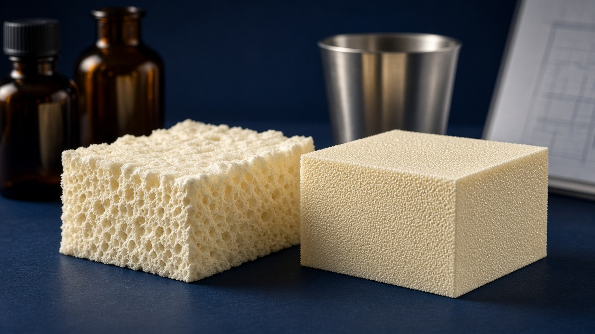
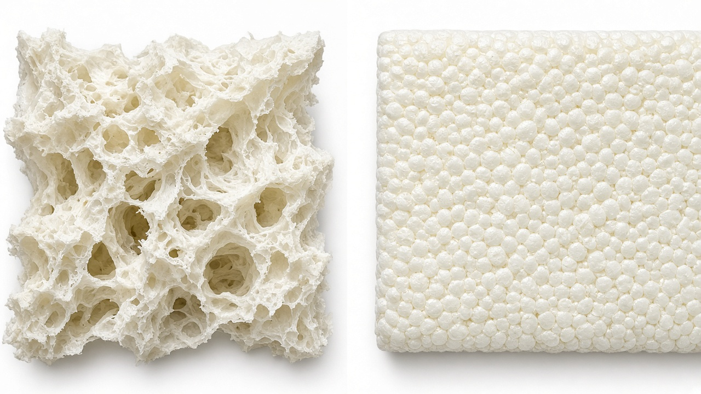
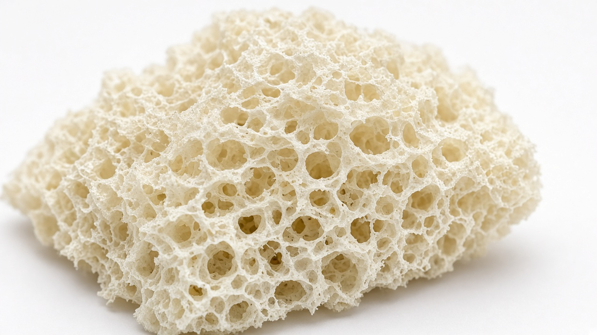
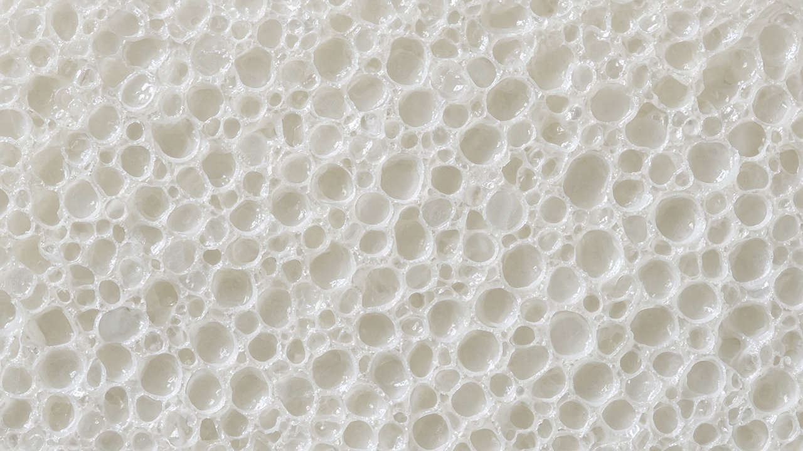
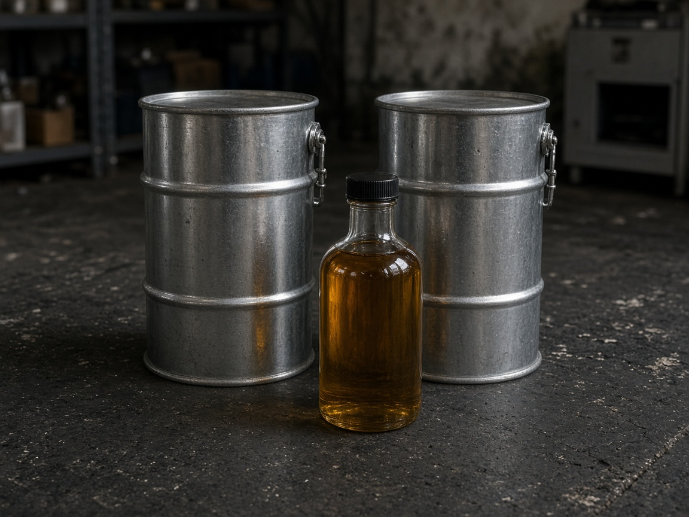
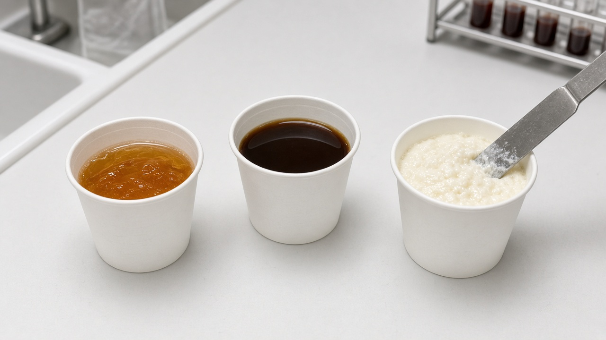

Formulas first. Supporting TDS, catalyst, memo and patent notes are kept after the two systems so the lab can check every number.

Left: open cell — windows broken, air passes, foam stays soft. Right: closed cell — membranes intact, gas trapped, foam is rigid and insulating.

Open-cell structure. High water makes CO₂. Catalysts blow faster than they gel so the windows rupture.
| Density | 7–12 kg/m³ |
| Closed-cell content | < 10 % |
| Cream / rise / tack-free | 2–5 s / 8–15 s / 10–20 s |
| Isocyanate | PMDI, 31.0 % NCO |
| Index, lab cup | 90–105 |
| Index, 1:1 spray | 35–55 |
Midpoints of supplier System C. Amine package is 10.0 pbw: blow (PC-37 + CAT-T + BDMAEE) over gel (PC-15).
| Ingredient | Why it is in the formula | pbw |
|---|---|---|
| Sucrose / sucrose polyol | High-functionality backbone. Builds a network that can open and still stand. | 33.0 |
| Reactive flame retardant | FR that binds into the polymer instead of only sitting in the blend. | 8.0 |
| TEP | Cuts viscosity and adds phosphorus FR. | 17.0 |
| Ecosurf SA-9 | Emulsifies water into the polyol so blow is even. | 6.0 |
| Silicone surfactant | Opens and evens the cells. Too little = collapse. Too much = closed windows. | 1.2 |
| Water | Main blowing agent. Reacts with NCO to make CO₂. This is what makes the foam open and light. | 24.0 |
| PC-37 | Blow catalyst. | 2.4 |
| CAT-T | Blow catalyst. | 2.4 |
| PC-15 | Gel / balance. Holds the rise so it does not collapse. | 4.2 |
| BDMAEE or DEDEE | Strong open-cell blow. Helps rupture windows. | 1.0 |
| Biocide | In-can protection of the high-water blend. | 0.8 |
| B-side total | 100.0 |
| Ingredient | pbw | Ingredient | pbw |
|---|---|---|---|
| CREAPOL PD 230 | 40.0 | CREAPOL 1500 | 18.0 |
| Emulsifier NP-9 / SA-9 | 8.0 | Silicone surfactant | 1.5 |
| Water | 20.0 | PC-37 + CAT-T | 2.0 + 1.8 |
| PC-15 | 3.5 | DABCO 2040 optional | 0.3 |

Closed-cell structure. Low water, higher index, and gel-heavy catalyst keep the membranes intact.
| Density | 28–40 kg/m³ |
| Closed-cell content | > 90 % |
| Cream / gel / tack-free | 8–15 s / 25–45 s / 40–70 s |
| Isocyanate | PMDI, 31.0 % NCO |
| Index | 115–125 (calc. 120) |
| Weight ratio | ≈ 100 A : 100 B |
Water is 2.0 pbw, not 15–26. That is the difference between a closed-cell rigid foam and an open-cell spray foam.
| Ingredient | Why it is in the formula | pbw | OH# | eq |
|---|---|---|---|---|
| CREAPOL 326 GP | High-OH branched rigid backbone. | 35.5 | 405 | 0.2562 |
| CREAPOL 1500 | Linear flow. Carries pentane if you move to CC-02. | 24.0 | 260 | 0.1112 |
| CREAPOL PD 230 | Softer glycol polyester. Stops the blend going too brittle. | 7.0 | 225 | 0.0281 |
| TCPP | Halogen FR. | 12.0 | 0 | 0 |
| TEP or DEHMP | FR plus viscosity cut. | 6.5 | 0 | 0 |
| Reactive FR | Bound FR. Re-index if it has OH groups. | 5.0 | 0* | 0* |
| Emulsifier | Keeps water and FR mixed. | 3.5 | 0 | 0 |
| Silicone surfactant | Fine, sealed cells. Do not use an open-cell silicone here. | 1.4 | 0 | 0 |
| Water | Limited CO₂. Enough to help nucleation, not enough to open cells. | 2.0 | 6233 | 0.2222 |
| PC-15 | Gel / balance. | 1.30 | — | — |
| DABCO 2040 | Strong gel / cure. | 1.00 | — | — |
| CAT-T | Small blow trim only. | 0.25 | — | — |
| PC-37 | Small blow trim only. | 0.15 | — | — |
| B-side total | 100.0 | 0.6177 |
OH eq = 0.6177 / 100 g B
NCO eq = 0.6177 × 1.20 = 0.7412
PMDI EW 135.5 → 100.4 g A / 100 g B
Mix at 100 : 100 by weight. Confirm volume after you measure densities.
Keep CC-01. Cut water to 1.6. Add 10–12 pbw n-/c-pentane or HFO-1233zd. If pentane will not dissolve, +4 CREAPOL 1500 and −4 CREAPOL 326 GP. Index 115–125. Hydrocarbons need rated equipment.
Values copied from the three Flokser TDS sheets. Mid-range OH figures are used only for the CC-01 index. Specification windows stay as published.
| Property | CREAPOL 326 GP | CREAPOL 1500 | CREAPOL PD 230 |
|---|---|---|---|
| TDS code | K.TDS.02.22.03.05.02.18 | K.TDS.02.22.03.05.02.15 | K.TDS.02.22.03.05.02.04 |
| Chemistry | Aromatic, branched polyester polyol | Oil-based, aromatic, linear polyester polyol | Aromatic, glycol-based polyester polyol |
| Stated use | PET-based rigid foam | Rigid PUR / PIR; excellent pentane compatibility | General aromatic polyester modifier |
| Hydroxyl number | 380–430 mg KOH/g | 250–270 mg KOH/g | 210–240 mg KOH/g |
| Mid OH used in calc. | 405 mg KOH/g | 260 mg KOH/g | 225 mg KOH/g |
| Equivalent weight | 138.5 g/eq | 215.8 g/eq | 249.3 g/eq |
| Viscosity @ 25 °C | 3500–4500 cP | 1800–2200 cP | 4250–4750 cP |
| Moisture | 0.1 wt % max | ≤ 0.05 %w | ≤ 0.05 %w |
| Acid number | 2–3 mg KOH/g | ≤ 1 mg KOH/g | ≤ 1 mg KOH/g |
| Storage / shelf life | 20–40 °C · 1 year | 20–40 °C · 12 months | 20–40 °C · 12 months |
| Role in the formulas | CC-01 rigid backbone | CC-01 flow / pentane carrier | CC-01 modifier · OC-02 trial |

Keep drums sealed at 20–40 °C. Measure moisture before every trial series.
EW (g/eq) = 56 100 ÷ OH number (mg KOH/g)
Water EW = 9.0 g/eq (OH# 6 233)
PMDI EW @ 31.0 % NCO = 135.5 g/eq
326 GP is the high-OH rigid driver. 1500 lowers viscosity and carries pentane. PD 230 is the slower modifier. Together they are the CC-01 package. They are not a complete open-cell spray package — that still needs the sucrose / polyether polyols in the memo.
Supplier: Flokser Kimya Sanayi ve Ticaret A.Ş., Hadımköy Mah. Ürgüplü Cad. No: 7/3, 34555 Arnavutköy — İstanbul, Turkey. TDS values are not a performance guarantee.
Roles from PO 1009433. Chemical names are the industry spellings (the phone photos contain OCR typos). Quantities are listed only so the lab knows which drums are on the floor.
| Code | Chemical name | Role in formula | On the PO | Pack | HS |
|---|---|---|---|---|---|
| PC-15 | N,N,N′,N′-Tetramethyldipropylenetriamine | Gel / balance | 26 236 lb | 1 874 lb × 14 totes | 2921 |
| PC-37 | 2-[2-(Dimethylamino)ethoxy]ethanol | Blow | 1 984 lb | 1 984 lb × 1 tote | 2922.19 |
| CAT-T | Trimethyl hydroxyethyl ethylenediamine | Blow | 9 370 lb | 1 874 lb × 5 totes | 2922.1 |
| Blow | CAT-T / BDMAEE / PC-37 / DEDEE |
| Gel / balance | PC-15 |
| Strong gel / cure | DABCO 2040 |
| Combined OC cat package | USD 5.15 / kg CIF Turkey port |
Polymeric MDI (≈ 31 % NCO), silicone surfactant, emulsifier (NP-9 or Ecosurf SA-9), flame retardant (TCPP / TEP / DEHMP / reactive FR), biocide, and — for OC-01 — sucrose / polyether polyols. For CC-02, pentane or HFO-1233zd is optional but preferred.
From Memo Style.pdf, 31 August 2026, xu wang to george@bazzfoam.com. These are ranges, not a finished 100-part formula. High water (15–26) marks A / B / C as open-cell type. Closed-cell water is 2.0 in CC-01.
| Ingredient | A | B | C |
|---|---|---|---|
| Sucrose / sucrose polyol | 20–60 | — | 30–36 |
| Polyether polyol 1 | — | 15–19 | — |
| Polyether polyol 2 | — | 14–18 | — |
| Reactive FR | — | — | 6–10 |
| DEHMP / organophosphate | — | 13–17 | — |
| TEP | — | — | 15–19 |
| TCPP | 15–25 | — | — |
| Amine catalysts | 4–10 | 8–12 | 8–12 |
| Emulsifier | 5–15 | 8–12 NP-9 | 4–8 Ecosurf SA-9 |
| Silicone surfactant | 0.5–2 | 0.5–2 | 0.5–2 |
| Water | 15–25 | 18–21 | 22–26 |
| Biocide | — | — | 0.5–1 |

Part B is the formula above. Part A is polymeric MDI. Bring both to temperature, then mix before cream.
1. Condition A and B at 21–23 °C.
2. Weigh B, then weigh A, into dry cups.
3. Pour A into B. Mix 5–6 s at 2 500–3 000 rpm for OC, 6–8 s for CC.
4. Clock cream, gel, rise and tack-free from mix start.
5. Do not touch after cream. Cut at 24 h.
First series: 200–300 g total. No machine spray until three clean cups.
EWpolyol = 56 100 / OH# · eq = pbw / EW · EWwater = 9.0 · EWPMDI = 4 200 / %NCO
Index = (NCO eq / OH eq) × 100 · A-side (g) = OH eq × (Index / 100) × EWPMDI
| Trial | Change from control | What you are asking |
|---|---|---|
| OC-01 | Control on this page | Does the midpoint rise and open? |
| OC-02 | +1.0 water | Lower density / more opening |
| OC-03 | PC-15 4.2 → 3.6 | Less tightness / over-gel |
| OC-04 | PC-37 2.4 → 3.0 | Faster blow |
| CC-01 | Control on this page | 1:1 rigid closed-cell baseline |
| CC-02 | 326 GP +4 / 1500 −4 | More rigidity and faster cure |
| CC-03 | Water 2.0 → 1.5 | Higher closed-cell content |
| CC-04 | DABCO 2040 1.0 → 1.4 | Demold strength |
Temperature, mix time, cream, gel, rise, tack-free, collapse, shrink, scorch, friability.
Free-rise density. Then compressive strength, 70 °C / 90 % RH stability, closed-cell content if you can.
Three cups, no collapse, density in window, cream/rise pair repeats.
Numbers read from the client screenshots. Listed as blowing-agent / foam technology context, not freedom-to-operate advice.
| Applicant (as shown) | Publication / patent | Date on second screenshot |
|---|---|---|
| Honeywell | US7655610 / US7655610B2 | 2024.10 |
| Honeywell | US8618040 / US8618040B2 | 2023.11 |
| Honeywell | US8962707 / US8962707B2 | 2023.10 |
| Honeywell | US9884946 | 2025.4.6 |
| Honeywell | US8053404B2 | 2024.4 |
| Honeywell | US8623808B2 | 2024.4 |
| Arkema | CN105001440A | — |
| Honeywell | EP2640800A2 · EP2737006A2 · EP2606086A2 · EP3567072A1 | — |
| Honeywell | JP5504161B2 · JP6231496B2 | — |
CREAPOL 326 TDS · CREAPOL 1500 TDS · CREAPOL PD 230 TDS · Memo Style.pdf (xu wang, 31 Aug 2026) · PO 1009433 catalyst photos · Honeywell / Arkema patent screenshots.
Not a production specification, fire-test certificate, spray-machine card, or legal clearance. Write the exact silicone, FR and PMDI grades on the trial sheet when the drums are opened.
| Step | Action | Owner |
|---|---|---|
| 1 | Confirm sucrose / polyether, silicone, FR and PMDI grades. | Purchasing |
| 2 | Run OC-01 and CC-01 as 200–300 g cups at 22 °C. | Lab |
| 3 | Change only one variable per trial. | Lab |
| 4 | Move to CC-02 only with rated equipment if pentane / HFO is intended. | Plant / HSE |
| 5 | Return cream / rise / density numbers for the next revision. | Technical |
| Role | Name | Signature | Date |
|---|---|---|---|
| Prepared | Technical — Bazz Foam formulation pack Rev. C | 28 Sep 2026 | |
| Issued to | Bazzfoam | ||
| Lab acceptance | First cup series OC-01 + CC-01 complete | ||
| Next revision | After cream / rise / density return |